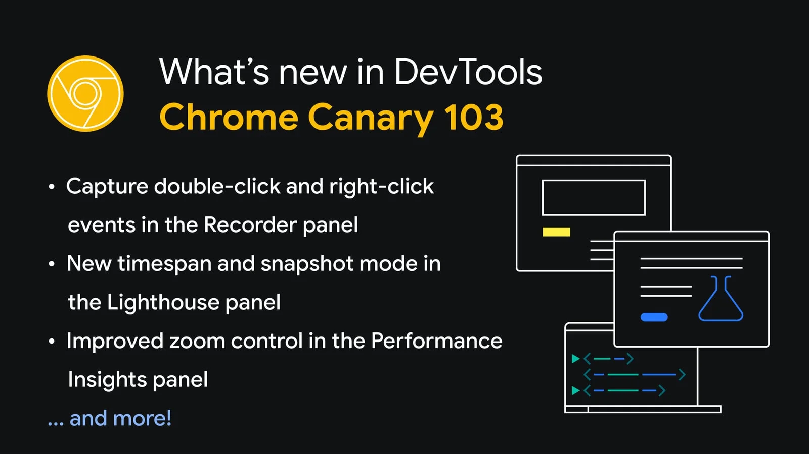
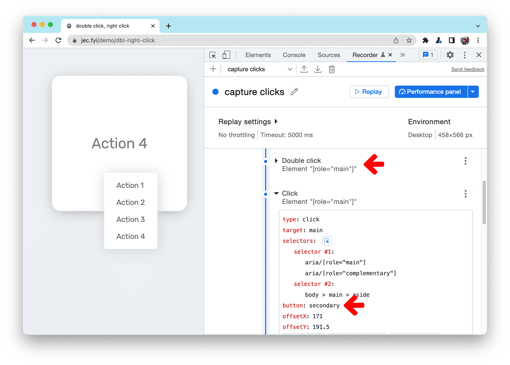
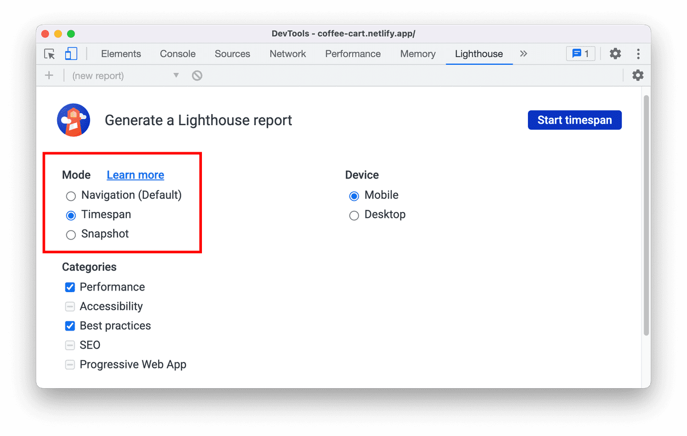
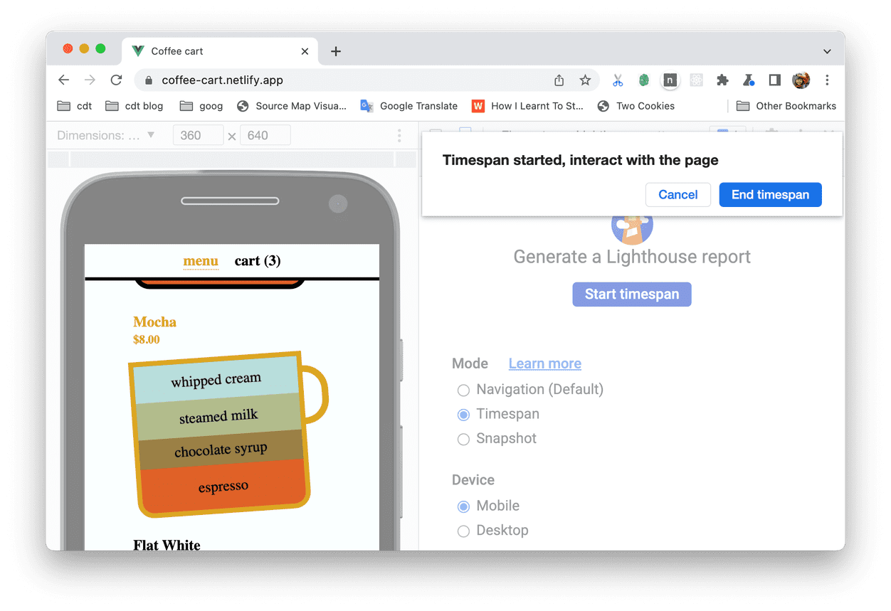
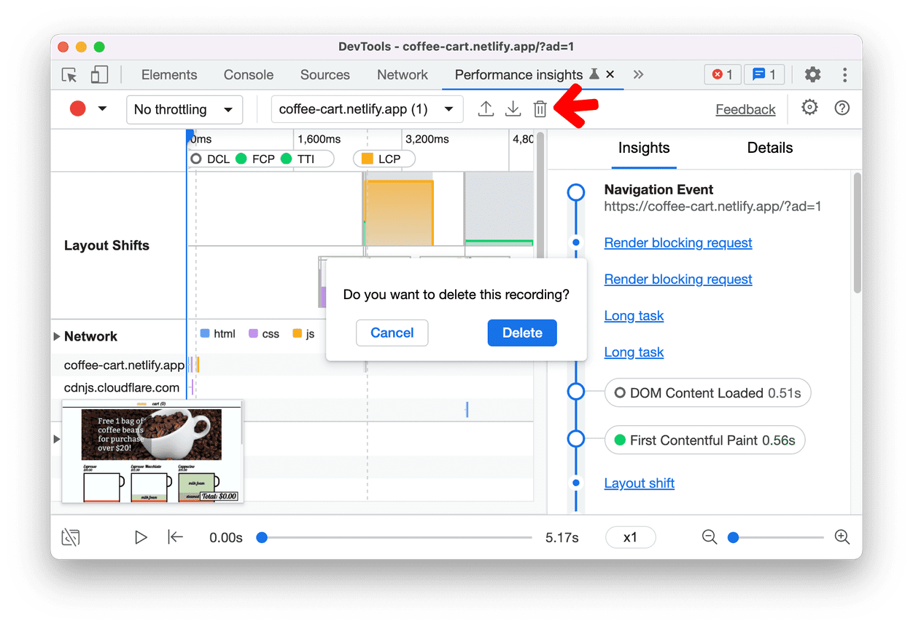
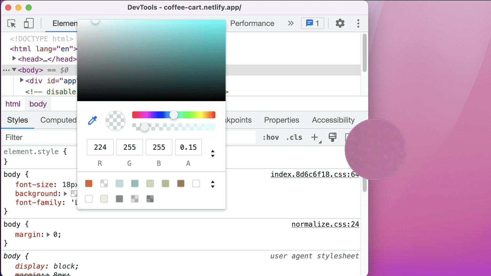
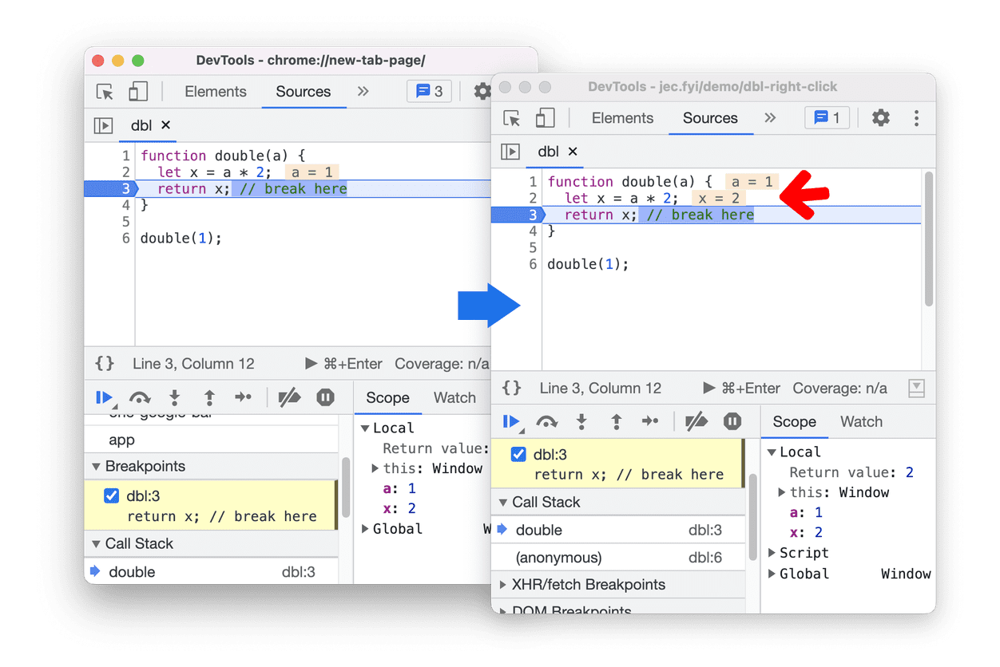
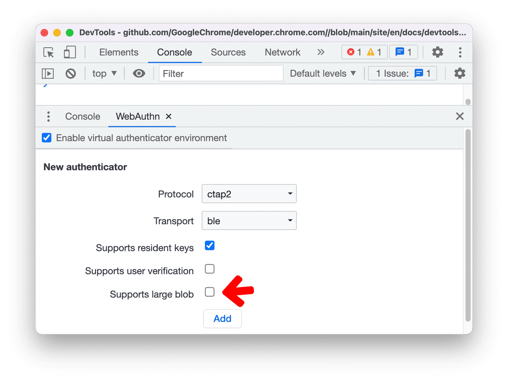

Novedades en DevTools (Chrome 103)
Capture eventos de doble clic y clic derecho en el panel Grabador
El panel Grabadora ahora puede capturar eventos de doble clic y clic derecho.
En este ejemplo, inicie una grabación e intente realizar los siguientes pasos:
- Haga doble clic en la tarjeta para ampliarla
- Haga clic derecho en la tarjeta y seleccione una acción del menú contextual
Para comprender cómo Recorder capturó estos eventos, expanda los pasos:
- El doble clic se captura como type: doubleClick.
- El evento de clic derecho se captura como type: clickpero con la buttonpropiedad establecida en secondary. El buttonvalor de un clic de ratón normal es primary.
Nuevo modo de intervalo de tiempo e instantánea en el panel Lighthouse
Ahora puede usar Lighthouse para medir el rendimiento de su sitio web más allá de la carga de la página.
El panel Lighthouse ahora admite 3 modos de medición de flujo de usuario:
- Los informes de navegación analizan la carga de una sola página. La navegación es el tipo de informe más común. Todos los informes de Lighthouse anteriores a la versión actual son informes de navegación.
- Los informes de intervalos de tiempo analizan un período de tiempo arbitrario, que normalmente contiene interacciones del usuario.
- Los informes de instantáneas analizan la página en un estado particular, generalmente después de que el usuario haya interactuado con ella.
Por ejemplo, midamos el rendimiento de agregar artículos al carrito en esta página de demostración. Seleccione el modo Intervalo de tiempo y haga clic en Iniciar intervalo de tiempo. Desplácese y agregue algunos artículos al carrito. Una vez que haya terminado, haga clic en Finalizar intervalo de tiempo para generar un informe Lighthouse de las interacciones del usuario.
Consulte Flujos de usuario en Lighthouse para conocer los casos de uso únicos, los beneficios y las limitaciones de cada modo.
Actualizaciones de Perspectivas de rendimiento
Control de zoom mejorado en el panel Performance Insights
DevTools ahora se acercará según el cursor del mouse en lugar de la posición del cursor de reproducción. Con el último zoom basado en el cursor, puede mover el mouse a cualquier parte de la pista y acercar el área deseada de inmediato.
Consulte Perspectivas de rendimiento para obtener información práctica y mejorar el rendimiento de su sitio web con el panel.
Confirmar para eliminar una grabación de interpretación
DevTools ahora muestra un cuadro de diálogo de confirmación antes de eliminar una grabación de rendimiento
Reordenar paneles en el panel Elementos
Ahora puede reordenar los paneles en el panel elementos según sus preferencias.
Por ejemplo, cuando abre DevTools en una pantalla estrecha, el panel Accesibilidad se oculta debajo del botón mostrar más. Si depura problemas de accesibilidad con frecuencia, ahora puede arrastrar el panel al frente para facilitar el acceso.
Elegir un color fuera del navegador
DevTools ahora admite elegir un color fuera del navegador. Anteriormente, solo podía elegir un color dentro del navegador.
En el panel Estilos, haga clic en cualquier vista previa de color para abrir un selector de color. Usa el cuentagotas para elegir el color de cualquier lugar.
Vista previa de valores en línea mejorada durante la depuración
El depurador ahora muestra correctamente la vista previa de los valores en línea.
En este ejemplo, la doublefunción tiene un parámetro de entrada ay una variable x. Coloque un punto de interrupción en la returnlínea y ejecute el código. La vista previa en línea muestra valores ay xcorrectamente. Anteriormente, el depurador no mostraba el valor xen la vista previa en línea.
Admite blobs grandes para autenticadores virtuales
La pestaña WebAuthn ahora tiene la nueva casilla de verificación Admite blobs grandes para autenticadores virtuales.
Esta casilla de verificación está desactivada de forma predeterminada. Puede habilitarlo solo para los autenticadores con ctap2protocolo que admita claves residentes.
Nuevos atajos de teclado en el panel Fuentes
Dos nuevos métodos abreviados de teclado ahora están disponibles en el panel Fuentes:
- Alternar la barra lateral de navegación (izquierda) con Control / Command+ Shift+Y
- Alternar la barra lateral del depurador (derecha) con Control / Command+ Shift+H
Mejoras en los mapas de origen
Anteriormente, los desarrolladores experimentaban fallas aleatorias durante:
- Ejemplo de depuración con Codepen
- Identificación de la ubicación de origen de los problemas de rendimiento en un ejemplo de Codepen
- Falta la pestaña Componente cuando React DevTools está habilitado
Aquí hay algunas correcciones en los mapas de origen para mejorar la experiencia general de depuración:
- Asignación correcta entre ubicación y desplazamiento para scripts en línea y ubicación de origen
- Usar información alternativa para la ubicación del texto del marco
- Resuelva correctamente las URL relativas con la URL del marco
Descargar los canales de vista previa
Considere usar Chrome Canary, Dev o Beta como su navegador de desarrollo predeterminado. ¡Estos canales de vista previa le brindan acceso a las últimas funciones de DevTools, prueban API de plataforma web de vanguardia y encuentran problemas en su sitio antes que sus usuarios!
Ponerse en contacto con el equipo de Chrome DevTools
Utilice las siguientes opciones para analizar las nuevas funciones y los cambios en la publicación, o cualquier otra cosa relacionada con DevTools.
- Envíenos una sugerencia o comentario a través de crbug.com .
- Reporte un problema de DevTools usando Más opciones > Ayuda > Reportar un problema de DevTools en DevTools.
- Tuitee en @ChromeDevTools.
- Deje comentarios en nuestros videos de YouTube de Novedades de DevTools .
Novedades en herramientas de desarrollo
Una lista de todo lo que se ha cubierto en la serie What's New In DevTools.